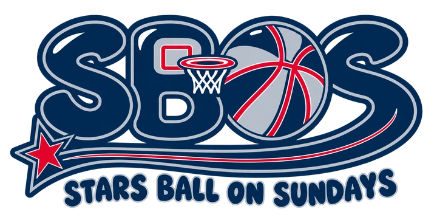
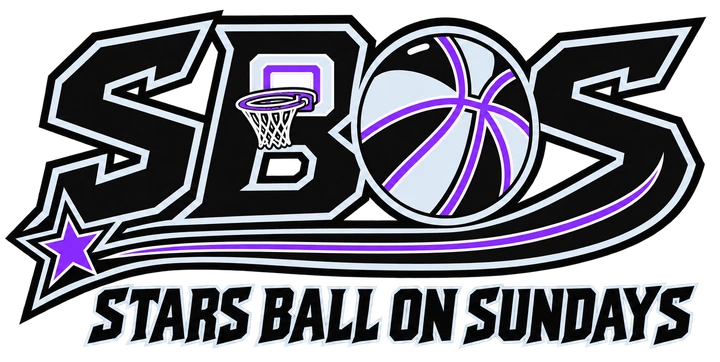
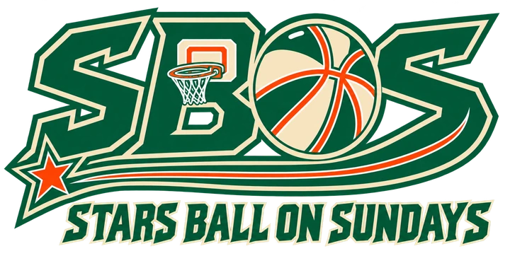
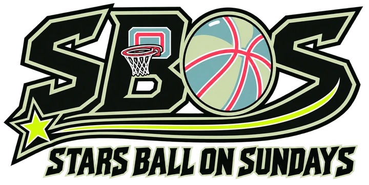

Classic
#02274E#C6CDD7#F2032C
Navy body. Silver trim. Red accent.
Full PNG ↗ · Compact PNG ↗ · Share image ↗
SBOS / BRAND IDENTITY / 01
Bold in the identity. Disciplined in the details. Stars Ball On Sundays brings an athletic character to a daily research board built around exact lines and visible evidence.
See the system on the board ↗01 / THE MARK
The supplied angular lockup is the primary identity. Its basketball O, left-facing hoop, connected underline and terminal star stay intact. The rounded logo is a separate secondary design for occasional community or editorial use.

02 / FOUR COLOR FAMILIES
Use one active family across a screen. Each has its own light and dark interface palette. Open Appearance to try them here; the board and your selected lines stay in place when themes change.
Navy body. Silver trim. Red accent.
Full PNG ↗ · Compact PNG ↗ · Share image ↗
Black body. Ice trim. Electric violet accent.
Full PNG ↗ · Compact PNG ↗ · Share image ↗
Forest body. Cream trim. Orange accent.
Full PNG ↗ · Compact PNG ↗ · Share image ↗
Green-black body. Sage trim. Lime star and stripe; coral seams and hoop; teal and sage ball panels.
Full PNG ↗ · Compact PNG ↗ · Share image ↗These are normalized web colors. The supplied raster colorways retain their source pixels and minor geometry differences; consistent vector production masters are still needed.
03 / TYPE & VOICE
Know the line.
Read the game.
Barlow Condensed Bold for short headings. Inter for names, analysis, controls and data.
0123456789 · +125 · −200 · 8/10
Numerals align. Sample sizes stay visible. A projection stays a projection. A saved price keeps its timestamp.
Write like a knowledgeable basketball colleague: direct, specific and transparent about evidence. The product descriptor is Daily Value Prop Selector. The brand name is always Stars Ball On Sundays.
04 / THE INTERFACE
Theme colors express identity. Outcome labels keep their meaning in every family and appearance. Pair color with text and a recognizable symbol.
Component examples only. These labels do not represent picks or recorded results.
05 / ARTWORK & PRODUCTION
Retain the complete star, connected underline, hoop direction and full-name lettering. Keep at least one tenth of the visible lockup height clear on each side. Start at 240 CSS pixels for the full lockup and increase size when the name loses legibility.
Five supplied references contain actual alpha transparency. Their web exports preserve that transparency and sit directly on the site surface, with no white box behind the artwork. The concept JPEG remains a reference only.
Available: four primary full and compact lockups, the Classic secondary full lockup, matching PNG and WebP exports, and four 1200 × 630 share images. Pending production artwork: genuine vectors, isolated submarks, one-color versions and approved app icons. The existing text favicon remains a temporary identifier.